C-Quest
An independent brand for a respected name inside the KEO Group.
C-Quest is a cost consultancy working on mega and giga projects across the Middle East. Established in 2015 and built on more than 60 years of expertise inside the KEO Group, it had grown into one of the most respected names in its field, and was named Cost Consultant of the Year in 2024. The brand had not kept pace. It still read as a department of its parent rather than the independent firm C-Quest had become.
The Challenge
Award-winning work, a brand that read like a subsidiary.
C-Quest was known for delivery, not for a presence of its own. The identity and communications were fragmented, the online footprint was thin, and nothing in the brand signalled the scale, independence or confidence of the business. A firm winning national awards was introducing itself with materials that undersold it.
The Brief
An independent position, and a system the team could run.
Three things had to be true. C-Quest needed a clear, independent position within the KEO Group. The visual and verbal identity had to read as modern and regionally relevant without discarding the legacy it was built on. And the assets had to be ones the internal team could use and maintain with confidence, not files that aged the moment we left.
Strategic Foundation
Precision, transparency and collaboration, made into a brand.
We set the position first: the leading independent cost consultancy, trusted to deliver financial certainty on the most ambitious developments. From there the brand ran on three principles the firm already lived by, precision, transparency and collaboration, carried in one line the whole business could stand behind. Strategic Cost Solutions.
Tested, Not Asserted
We measured the brand pattern instead of trusting taste.
The identity is built on a pattern drawn from the survey mark, a symbol of measured precision that fits a cost consultancy. The open question was how strongly to use it. We ran two versions through heatmap and contrast-grid tools. At full strength the pattern competed with the content and readability scored 56 out of 100. At a quarter strength the hierarchy held and readability rose to 63, with focus unchanged. The pattern ships at the opacity the data supported, not the one that looked busiest.
Precision. Transparency. Collaboration.
Strategic Cost SolutionsA survey mark, turned into a brand.
The identity is built from the survey reticle, a universal symbol of measured precision used across construction, surveying and cost work. It carries four ideas at once: precision and measurement, focus and orientation, balance and structure, connection and mapping. It frames content rather than decorating it.
Tested, Not Asserted
We measured the pattern instead of trusting taste.
Focus held at 78 in both versions. Clarity moved from 56 to 63 once the pattern stepped back. The brand pattern ships at 25 percent, the level the heatmap and contrast-grid testing supported.
Colour System
Two colours carry the brand. A third is for data only.
CQ Dark Grey anchors the system, CQ Red carries energy and the call to action. CQ Cerulean sits outside the core set, reserved for charts and data so the brand never reads as decoration on a results page.
It is a million times better than our current website.
What We Built
Six categories, one governed system.
Core Identity
Logo suite, typography, colour, and the grid and pattern system, with full guidelines for visual and verbal governance.
Stationery
Letterheads, business cards and email signatures that carry the brand through everyday correspondence.
Presentation & Business Tools
Templates, a capability statement and proposal formats that bring the same clarity to client documents.
Digital Platform
A new website built as a clean, modular system that translates the identity into an accessible experience.
Imagery System
Project and portrait guidelines that hold a consistent, credible look across every channel.
Social & Activation
Editable post templates, banners and launch assets the marketing team can run without us.
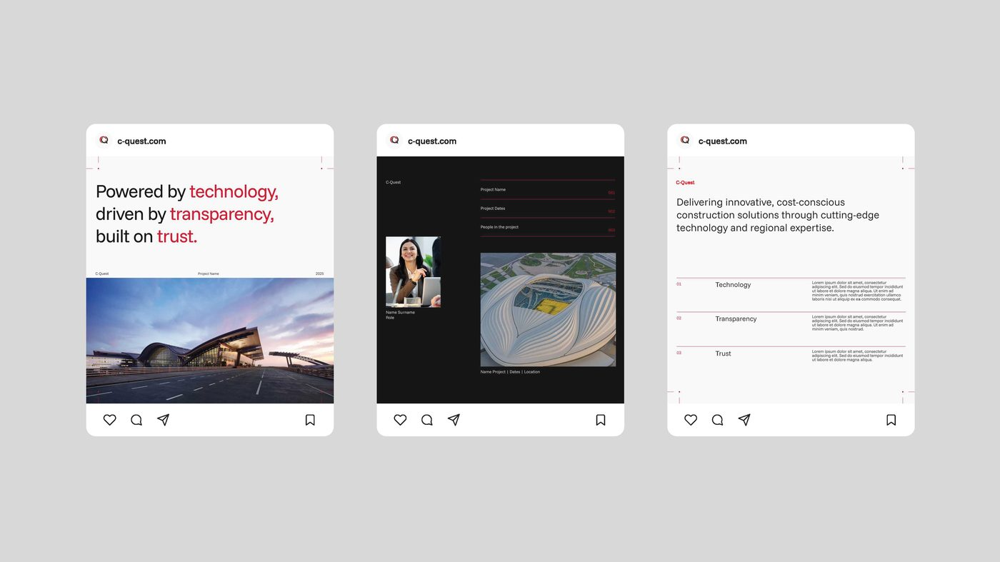
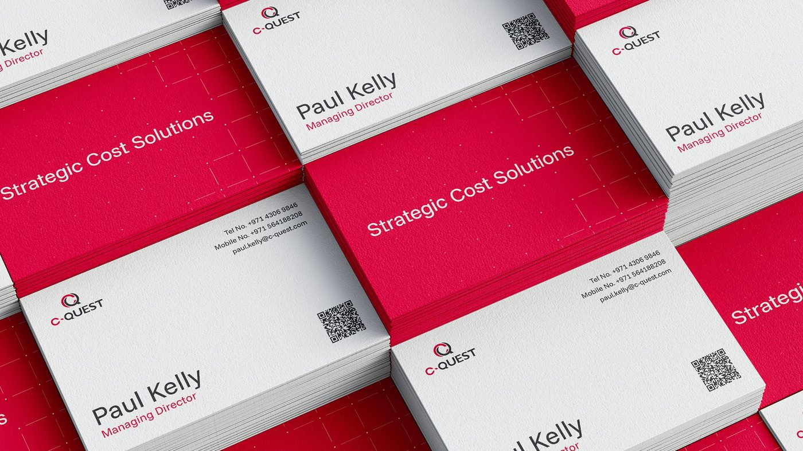
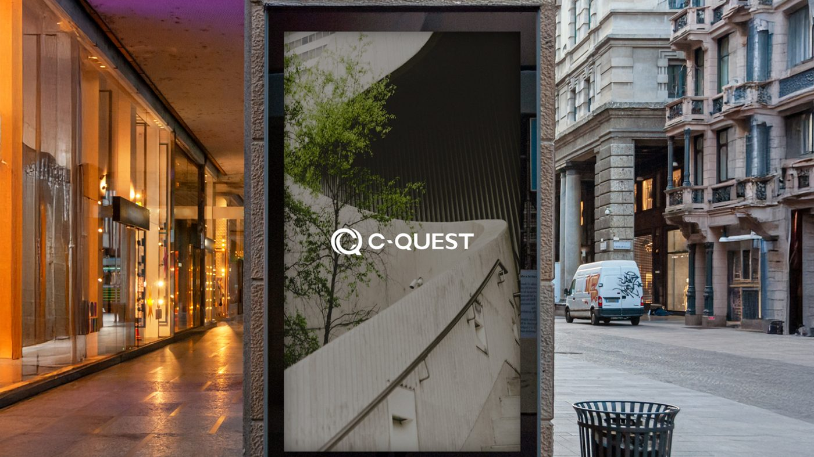
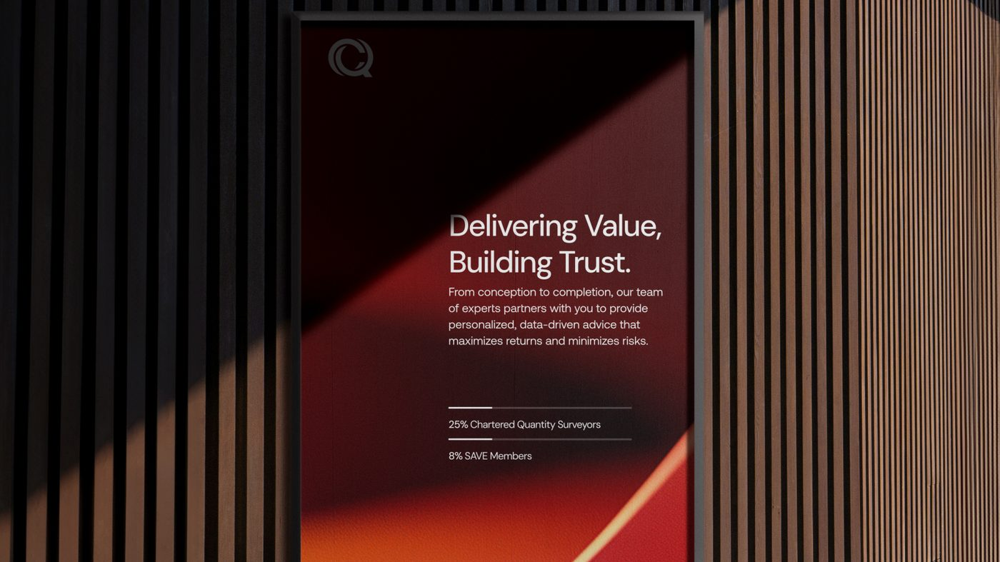
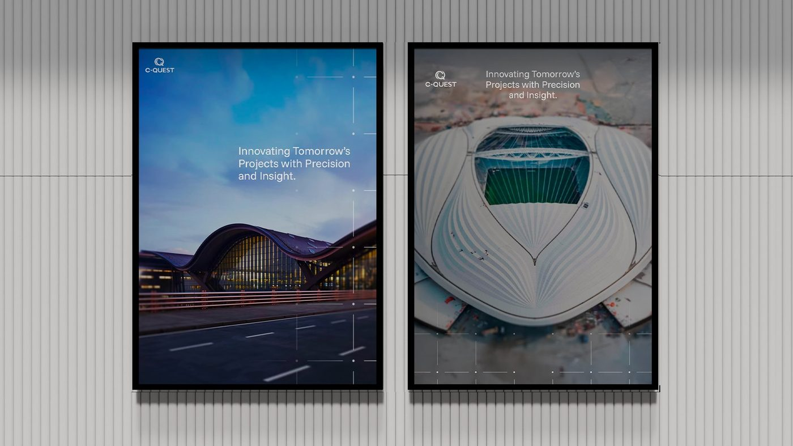
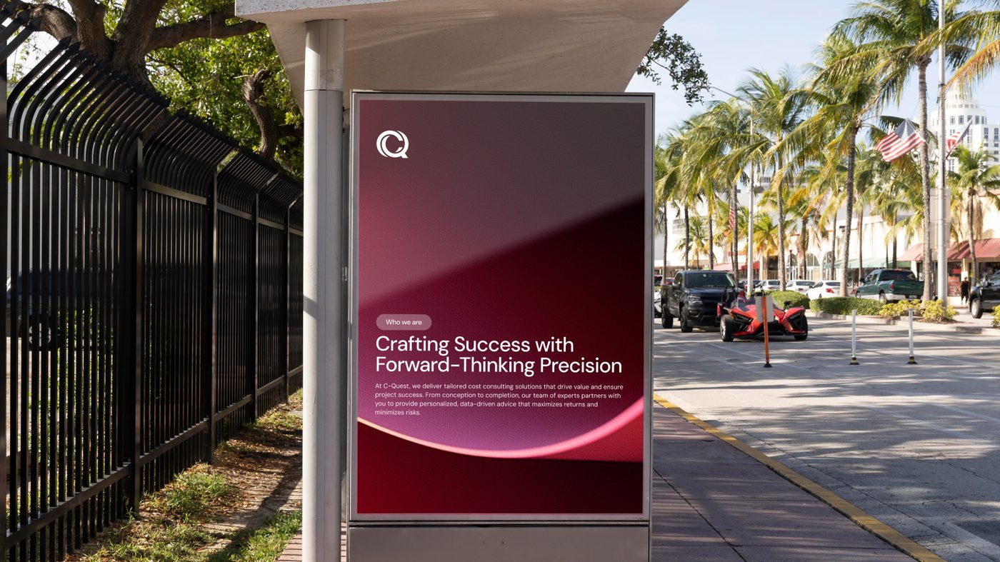
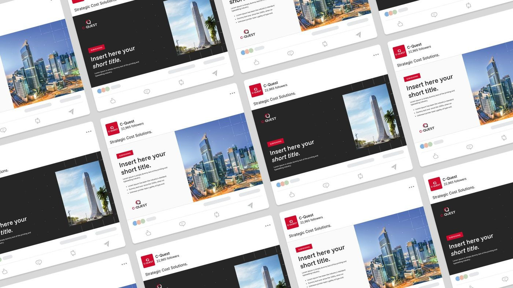
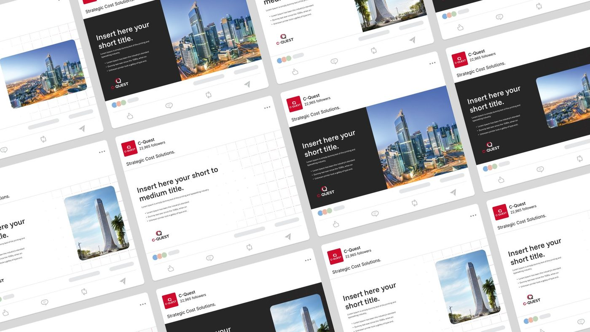
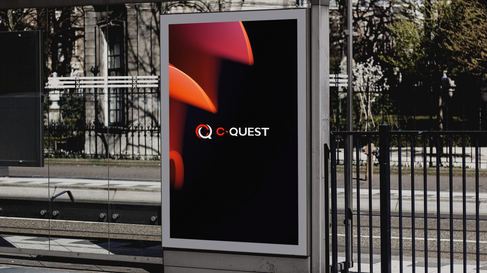
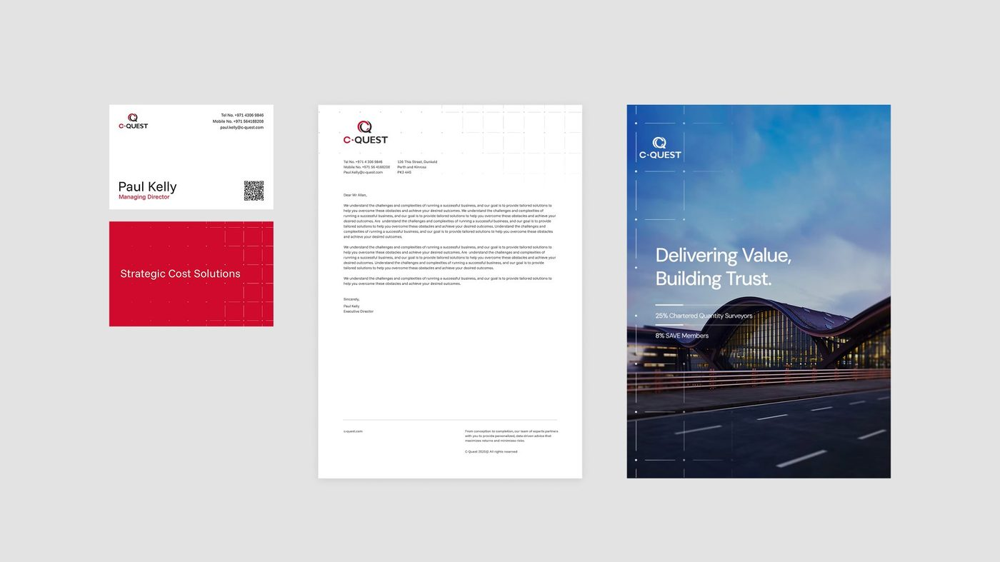
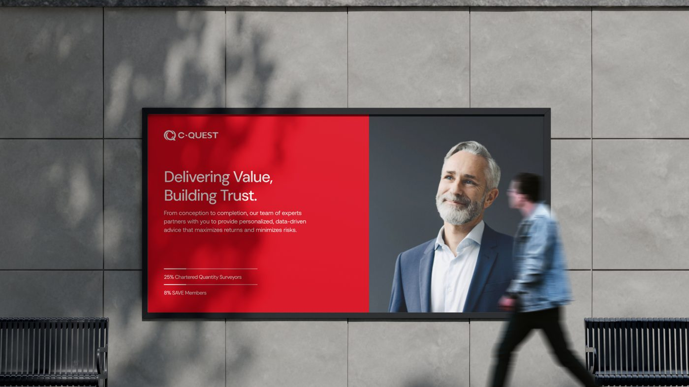
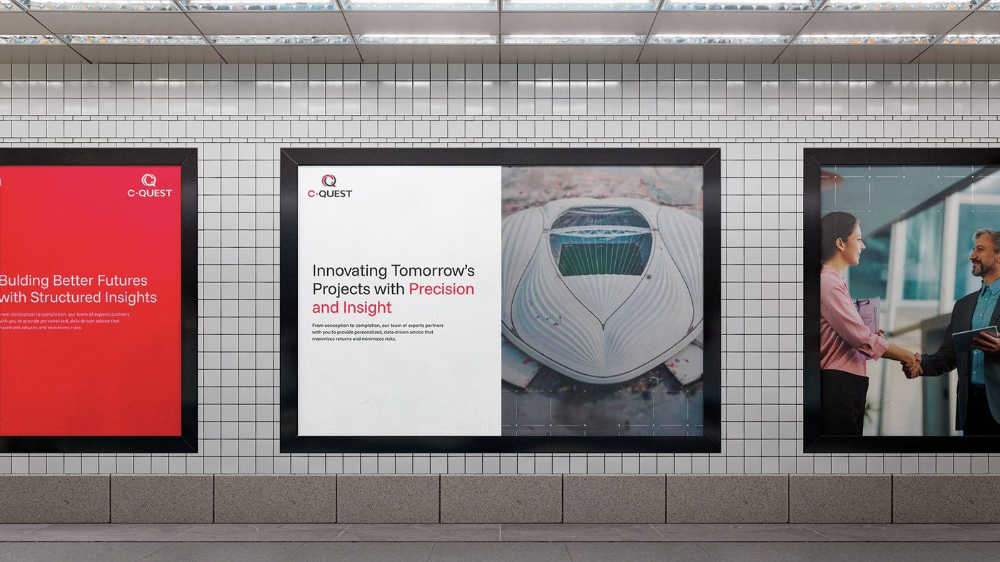
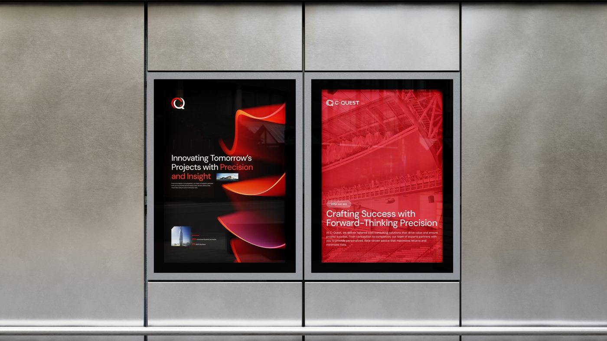
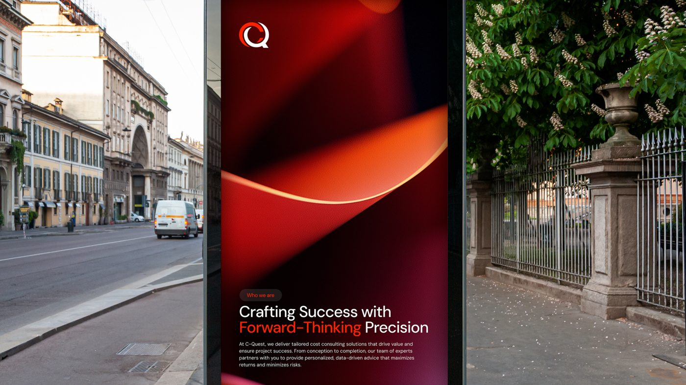
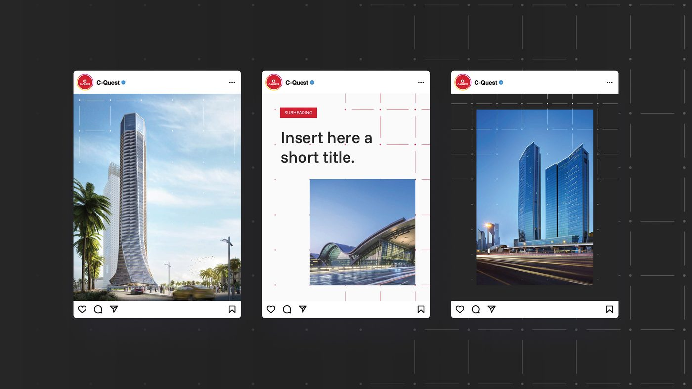
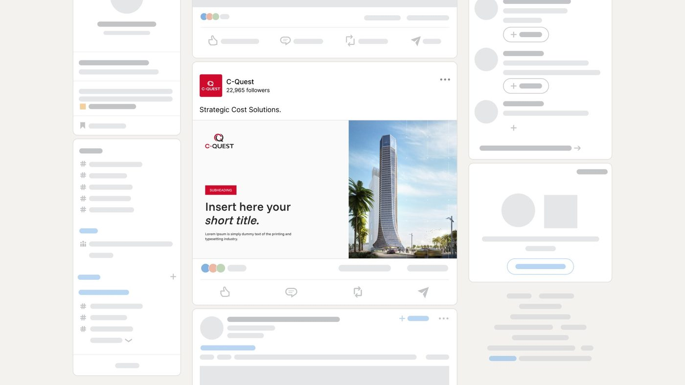
Where does your brand sit against the business?
Every engagement starts with the Brand Alignment Diagnostic, a fixed first step that scores your brand against the business and shows what to fix first.